No resources match that search.

CKS Certification
Certified Kubernetes Security Specialist from CNCF. Hands-on certification proving command-line proficiency in securing production K8s workloads.
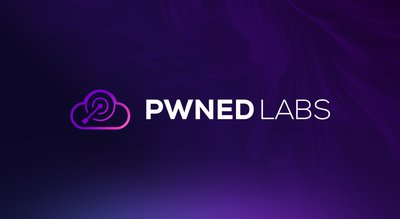
Pwned Labs Professional Bootcamps
Cloud attack & defense bootcamps for AWS (ACRTP), Azure/M365 (MCRTP), and GCP (GCRTP) with professional certifications.

CSA Cloud Threat Modeling
Training on top 11 cloud threats, threat modeling techniques, and risk treatment methods.

AWS Certified Cloud Practitioner
Foundational AWS certification covering cloud concepts and basic security.

AWS Solutions Architect Associate (SAA-C03)
Associate-level AWS certification with security design principles.

AWS Solutions Architect Professional
Professional-level AWS certification including advanced security architectures.

Security Certification Roadmap
Comprehensive visual guide to cybersecurity certifications and career paths.

ISC2 CCSP 2025
Updated Certified Cloud Security Professional with new domains: zero trust, DevSecOps, cloud-native security.
CKS: Kubernetes Security
Certified Kubernetes Security Specialist with hands-on labs for cluster and system hardening.

CSA CCSK v5
Updated Certificate of Cloud Security Knowledge v5 covering latest cloud security domains.

GIAC GCSA & GCLD
Cloud Security Automation (GCSA) and Cloud Data (GCLD) focusing on automation and data security.

CompTIA Cloud+ 2025
Updated Cloud+ covering cloud security implementation across hybrid environments.

Security Blue Team
Blue team certification platform providing hands-on training and credentials for defensive security practitioners.

WiCyS Mentorship Program
Structured annual mentorship program pairing members with experienced cybersecurity professionals for leadership development, career guidance, and networking.

ISACA Mentorship Program
Global one-to-one mentorship program for professionals at all career stages in IT audit, cybersecurity, and governance. Mentors and mentees earn CPE hours.

Cyversity
Nonprofit offering structured mentorship pairing new and established cybersecurity professionals for personalized career guidance, skills development, and networking.

CyberSecurity Mentoring Hub
Global mentor/mentee program with presentation sessions, networking events, and curated resources for cybersecurity career development.

MentorCruise - Cybersecurity
One-on-one mentoring marketplace with vetted cybersecurity professionals offering long-term mentorship on cloud security, pentesting, and career strategy.

ISSA International
Global nonprofit with local chapters providing educational forums, publications, peer networking, and chapter-level mentorship for security professionals.

Cloud Security Alliance Community
Leading cloud security organization with 80,000+ members, local chapter events, research working groups, and an exclusive online networking community.
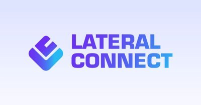
Lateral Connect Mentoring
Group mentorship program where small cohorts work under seasoned cybersecurity professionals, fostering collaborative learning and hands-on experience.
Sparks Mentorship Program
Free twelve-month program pairing college students with working and retired professionals for one virtual hour a month. General career mentorship rather than cloud-specific, so it suits students still choosing a direction.

Blacks In Cybersecurity
Mentoring program helping mentees develop technical skills, define career goals, and build their professional brand in cybersecurity.

MassCyberCenter Mentorship
State-sponsored program connecting diverse undergraduate students with cybersecurity industry professionals for career exploration and network development.

OWASP Community
Nonprofit with 250+ local chapters hosting meetups, workshops, and conferences for application security networking and community-driven knowledge sharing.

See Yourself in Cyber
National Cybersecurity Alliance initiative helping students launch security careers through campus events, workshops, scholarships, and mentorship connections.

InfraGard
FBI-private sector partnership with local chapters for cybersecurity and critical infrastructure professionals to share intelligence and build professional relationships.

Leland - Cybersecurity Mentors
Mentoring platform connecting users with top-rated cybersecurity mentors for one-on-one coaching on career transitions, certifications, and professional development.

The Triangle Net
Cybersecurity community connecting aspiring and junior security professionals with mentorship opportunities, internships, and career resources.

AWS Certified Security - Specialty (SCS-C03)
AWS's flagship security cert covering threat detection, IAM, infrastructure security, data protection, and incident response. Strong signal for senior AWS security roles.
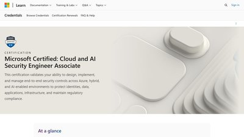
Microsoft SC-500: Cloud and AI Security Engineer Associate
Microsoft's current Azure security cert, covering identity, networking, compute, posture management, and securing AI workloads. Succeeds AZ-500.

Google Professional Cloud Security Engineer
Google's premier security cert covering IAM, VPC Service Controls, Cloud KMS, and Security Command Center. Practical, implementation-focused exam content.

Microsoft SC-100: Cybersecurity Architect Expert
Microsoft's expert-level certification for security architects. Covers Zero Trust, GRC, and end-to-end design across Microsoft 365 and Azure.

CompTIA Security+ (SY0-701)
The most widely-recognized entry-level security cert. Vendor-neutral, DoD 8570 approved, and often the first step on a cloud security career path.

ISC2 CISSP
ISC2's flagship certification and the most-requested credential in senior security job postings. Eight domains spanning architecture, IAM, and risk management.

Microsoft SC-200: Security Operations Analyst
Microsoft's associate-level SOC certification covering Sentinel, Defender XDR, and KQL hunting. A natural next step after SC-500 for blue teamers.

CompTIA CySA+ (CS0-003)
Vendor-neutral mid-level cert for SOC analysts and threat hunters. DoD 8570 approved and focused on detection, vulnerability management, and incident response.

KCSA - Kubernetes & Cloud Native Security Associate
CNCF's entry-level K8s security cert. Multiple-choice exam covering cloud-native threat model, platform security, and compliance - a stepping stone to CKS.

OSCP (PEN-200)
OffSec's flagship hands-on pentesting cert. 24-hour practical exam covering AD, web, and privilege escalation - the most recognized credential for offensive engineers.

GIAC GPCS - Public Cloud Security
GIAC's vendor-neutral cloud security cert spanning AWS, Azure, and M365. Pairs with SANS SEC510 - a strong choice for multi-cloud practitioners wanting breadth.

GIAC GCPN - Cloud Penetration Tester
GIAC's offensive cloud security cert paired with SANS SEC588. Covers cloud-native enumeration, container escapes, serverless abuse, and CI/CD pipeline attacks.

CSA CCZT - Certificate of Competence in Zero Trust
CSA's vendor-neutral Zero Trust credential covering NIST SP 800-207, CISA's ZT Maturity Model, and Forrester ZTX. Self-paced study materials included with the exam.

HashiCorp Vault Associate
Entry-level certification covering Vault deployment, secrets engines, authentication, and policies. Signals practical competence with the leading cloud-native secrets platform.

HashiCorp Terraform Associate
Associate cert covering Terraform basics, state, providers, and modules. Signals fluency with the dominant IaC tool behind landing zones and policy-as-code pipelines.

CKA - Certified Kubernetes Administrator
Two-hour hands-on exam operating a real cluster - troubleshooting, networking, storage, workloads. The operational prerequisite for CKS and the foundation for K8s security work.

ISACA CCAK - Cloud Auditing Knowledge
ISACA/CSA joint credential for auditing cloud controls against CCM, STAR, ISO 27001, and NIST. Pairs naturally with CCSK for GRC and audit-focused roles.

(ISC)² Certified in Cybersecurity (CC)
(ISC)²'s entry-level cert covering security principles, access control, networking, and ops. Free exam and training through the One Million initiative.

CompTIA PenTest+
Performance-based pentest cert covering cloud, on-prem, and IoT targets. DoD 8140/8570 approved; sits between Security+ and OSCP.

Microsoft SC-300 - Identity and Access Administrator
Microsoft cert focused on Entra ID identity design - conditional access, governance, hybrid, and external identities. Pairs with SC-500.

ISC2 SSCP
Systems Security Certified Practitioner - the operations-focused counterpart to CISSP for hands-on engineers implementing controls.

GIAC GCIH
GIAC Certified Incident Handler from SANS - industry-standard credential for detection, containment, and recovery work.

Linux Foundation KCNA
Entry-level CNCF cert covering core Kubernetes concepts, cloud-native architecture, and observability. The friendly on-ramp before CKA or CKS.
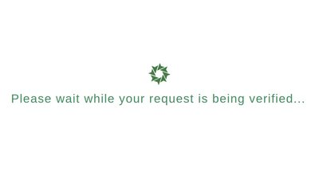
TCM PNPT
Practical Network Penetration Tester - a five-day hands-on AD compromise exam with report and live debrief. Accessible alternative to OSCP.
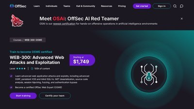
OffSec OSWE
Advanced Web Attacks and Exploitation - a 48-hour white-box source-review exam focused on authentication-bypass chain development.
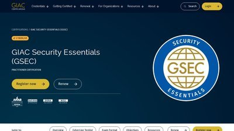
GIAC GSEC
Foundational SANS credential covering networking, crypto, incident handling, and cloud fundamentals. Vendor-neutral on-ramp before GCSA or GPCS.
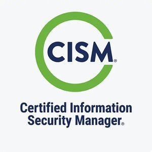
ISACA CISM
Management-focused cert covering security governance, risk, program development, and incident response. Common requirement for security manager, director, and CISO roles.
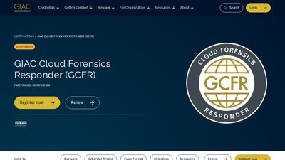
GIAC GCFR - Cloud Forensics Responder
SANS FOR509-paired credential for cloud DFIR in AWS, Azure, and M365. Tests CloudTrail analysis, identity-based persistence, and SaaS attacker reconstruction.
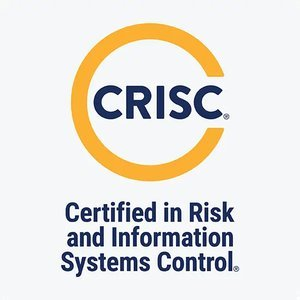
ISACA CRISC
Certified in Risk and Information Systems Control - IT risk identification, assessment, response, and control monitoring. Widely recognized in GRC and audit roles.
HTB Certifications
Hack The Box's practical certs - CPTS, CBBH, CDSA, CWEE. Hands-on exams with a professional report against a live lab, widely accepted as OSCP-adjacent.

Burp Suite Certified Practitioner
PortSwigger's hands-on web AppSec certification tied to the free Web Security Academy. Four-hour practical exam exploiting real browser-based labs.

Microsoft SC-900
Entry-level Security, Compliance, and Identity fundamentals cert covering Zero Trust, Entra ID, Purview, and Defender. Common first cert for Azure/M365 practitioners.
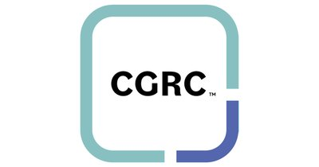
ISC2 CGRC
ISC2 certification focused on governance, risk, and compliance using frameworks like NIST RMF - relevant for cloud authorization and audit roles.
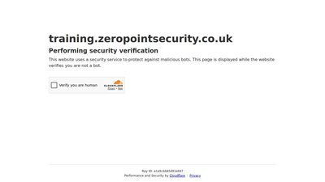
Zero Point Security CRTO
Hands-on red team certification covering adversary simulation, lateral movement, and defense evasion across realistic enterprise environments.

Azure Security Engineer (AZ-500, retired)
Retired 31 August 2026 and no longer earnable. Superseded by SC-500; listed here for holders and for anyone arriving from an older reading list.
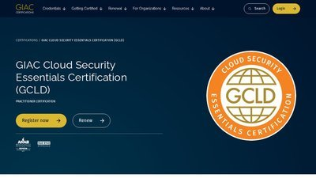
GIAC Cloud Security Essentials (GCLD)
Vendor-neutral GIAC certification covering multi-cloud security fundamentals across AWS, Azure, and Google Cloud.
CompTIA CySA+
Vendor-neutral blue-team certification covering threat detection, security monitoring, and incident response.
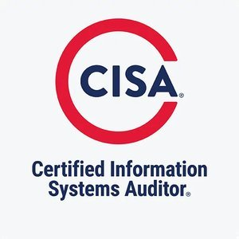
ISACA CISA
ISACA's flagship audit certification covering IS auditing, governance, and protection of information assets.
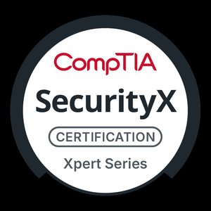
CompTIA SecurityX
Advanced vendor-neutral certification (formerly CASP+) for security architects, spanning architecture, engineering, and GRC.
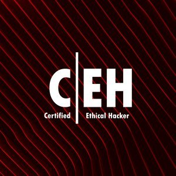
EC-Council CEH
Widely recognized offensive-security certification covering the full ethical-hacking lifecycle across 20 domains.
ISACA CCAK
Vendor-neutral ISACA/CSA credential for auditing and assessing cloud environments against governance and compliance frameworks.
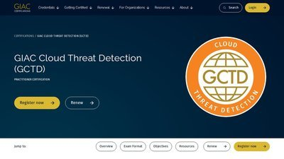
GIAC GCTD
GIAC certification validating cloud threat detection, log analysis, and detection engineering against cloud-native telemetry.
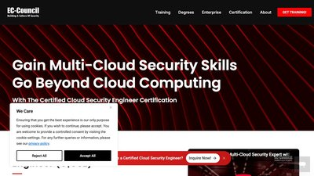
EC-Council C|CSE
EC-Council credential blending vendor-neutral cloud security concepts with hands-on AWS, Azure, and GCP labs.
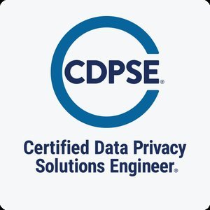
ISACA CDPSE
ISACA credential validating technical privacy engineering - privacy by design, data lifecycle, and privacy architecture for cloud data flows.
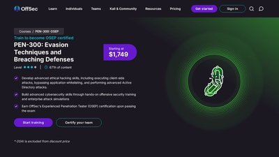
OffSec OSEP (PEN-300)
Advanced OffSec red-team certification (PEN-300) focused on defense evasion, lateral movement, and Active Directory attacks via a 48-hour hands-on exam.
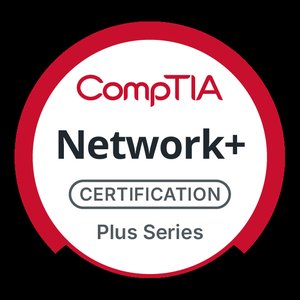
CompTIA Network+
Vendor-neutral foundational cert covering networking concepts, protocols, and basic security - the groundwork for cloud and security roles.
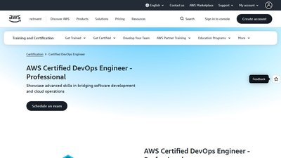
AWS Certified DevOps Engineer - Professional
Professional AWS cert covering CI/CD, infrastructure as code, automated monitoring, and policy enforcement - the DevSecOps skill set.
GIAC Penetration Tester (GPEN)
GIAC's hands-on penetration testing cert with a live-lab exam covering reconnaissance, exploitation, and process-driven methodology.
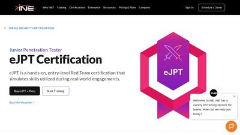
eJPT (Junior Penetration Tester)
Entry-level, hands-on penetration testing cert with a 48-hour live-lab exam covering recon, network, and web exploitation.
CCAK (Certificate of Cloud Auditing Knowledge)
ISACA and CSA's credential for auditing cloud environments - Cloud Controls Matrix, shared responsibility, and continuous assurance.
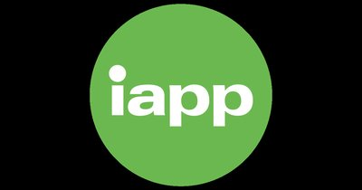
CIPT (Certified Information Privacy Technologist)
IAPP's technical privacy credential covering privacy by design, data minimisation, and building data protection into cloud systems.
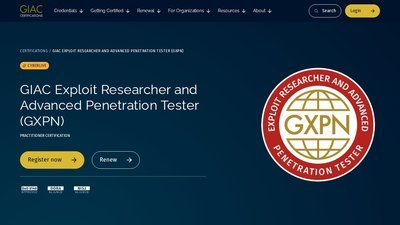
GIAC GXPN
GIAC's advanced offensive certification covering exploit development, network attacks, and cryptographic weaknesses - the deep end of the SANS pentest path.
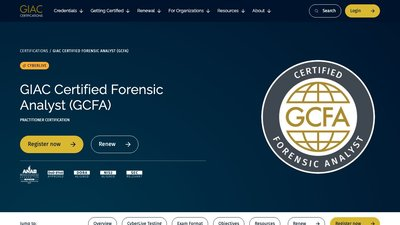
GIAC GCFA - Certified Forensic Analyst
GIAC's advanced DFIR certification covering intrusion investigation, host forensics, and attacker timeline reconstruction.
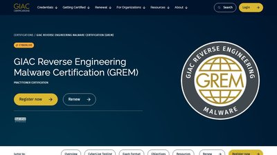
GIAC GREM - Reverse Engineering Malware
GIAC's malware analysis credential covering behavioral and code-level reverse engineering of malicious software.

CIPP/E (Certified Information Privacy Professional/Europe)
IAPP's benchmark European privacy certification covering GDPR and its impact on cloud data protection and compliance.

CIPM (Certified Information Privacy Manager)
IAPP certification for operationalizing a privacy program - governance, metrics, and incident response for cloud data.
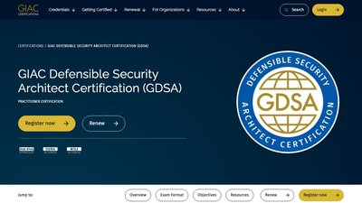
GIAC GDSA - Defensible Security Architecture
GIAC certification validating defensible, zero-trust security architecture design across cloud and hybrid environments.
Microsoft SC-401: Information Security Administrator
Microsoft associate cert for data security in Microsoft 365 and Azure - protection, DLP, and insider risk with Purview.
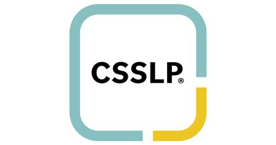
ISC2 CSSLP
(ISC)² credential validating secure software development skills across the full application lifecycle.
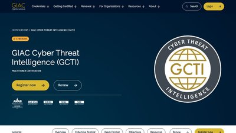
GIAC GCTI - Cyber Threat Intelligence
GIAC credential validating threat-intelligence analysis, adversary tracking, and structured analytic techniques.
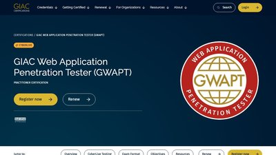
GIAC GWAPT - Web Application Penetration Tester
GIAC credential validating hands-on web application penetration testing against modern, cloud-hosted apps and APIs.
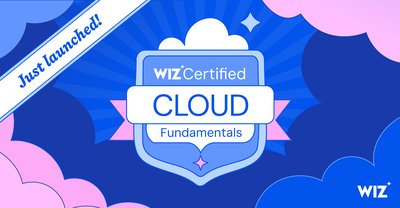
Wiz Certified
Wiz's certification program for validating cloud security skills on the Wiz platform.